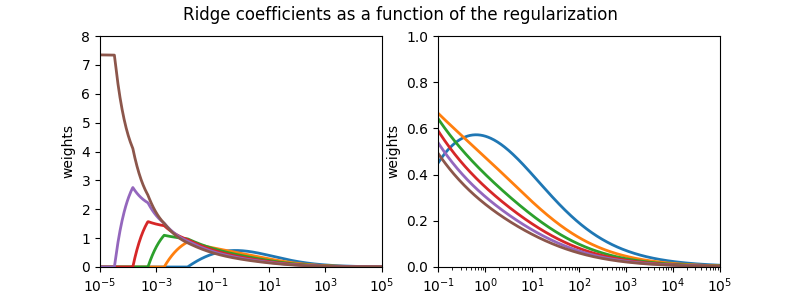

Plot NonnegativeRidge coefficients as a function of regularization¶
Note
This example is a copy of plot_ridge_path.py by Fabian Pedregosa
in the package Scikit-learn, using NonnegativeRidge.
NonnegativeRidge Regression is the estimator used in this example.
Each color represents a different feature of the
coefficient vector, and this is displayed as a function of the
regularization parameter.
This example also shows the usefulness of applying Ridge regression to highly ill-conditioned matrices. For such matrices, a slight change in the target variable can cause huge variances in the calculated weights. In such cases, it is useful to set a certain regularization (alpha) to reduce this variation (noise).
When alpha is very large, the regularization effect dominates the squared loss function and the coefficients tend to zero. At the end of the path, as alpha tends toward zero and the solution tends towards the ordinary least squares, coefficients exhibit big oscillations. In practise it is necessary to tune alpha in such a way that a balance is maintained between both.
# Authors: Joseph Knox <josephk@alleninstitute.org>
# License: Allen Institute Software License
# NOTE: modified from plot_ridge_path.py by Fabian Pedregosa
# from the package Scikit-Learn licensed under the 3 clause BSD License
# reproduced below:
#
# New BSD License
#
# Copyright (c) 2007–2018 The scikit-learn developers.
# All rights reserved.
#
#
# Redistribution and use in source and binary forms, with or without
# modification, are permitted provided that the following conditions are met:
#
# a. Redistributions of source code must retain the above copyright notice,
# this list of conditions and the following disclaimer.
# b. Redistributions in binary form must reproduce the above copyright
# notice, this list of conditions and the following disclaimer in the
# documentation and/or other materials provided with the distribution.
# c. Neither the name of the Scikit-learn Developers nor the names of
# its contributors may be used to endorse or promote products
# derived from this software without specific prior written
# permission.
#
#
# THIS SOFTWARE IS PROVIDED BY THE COPYRIGHT HOLDERS AND CONTRIBUTORS "AS IS"
# AND ANY EXPRESS OR IMPLIED WARRANTIES, INCLUDING, BUT NOT LIMITED TO, THE
# IMPLIED WARRANTIES OF MERCHANTABILITY AND FITNESS FOR A PARTICULAR PURPOSE
# ARE DISCLAIMED. IN NO EVENT SHALL THE REGENTS OR CONTRIBUTORS BE LIABLE FOR
# ANY DIRECT, INDIRECT, INCIDENTAL, SPECIAL, EXEMPLARY, OR CONSEQUENTIAL
# DAMAGES (INCLUDING, BUT NOT LIMITED TO, PROCUREMENT OF SUBSTITUTE GOODS OR
# SERVICES; LOSS OF USE, DATA, OR PROFITS; OR BUSINESS INTERRUPTION) HOWEVER
# CAUSED AND ON ANY THEORY OF LIABILITY, WHETHER IN CONTRACT, STRICT
# LIABILITY, OR TORT (INCLUDING NEGLIGENCE OR OTHERWISE) ARISING IN ANY WAY
# OUT OF THE USE OF THIS SOFTWARE, EVEN IF ADVISED OF THE POSSIBILITY OF SUCH
# DAMAGE.
from __future__ import division, print_function
import numpy as np
import matplotlib.pyplot as plt
from mcmodels.regressors import NonnegativeRidge
print(__doc__)
# X is the n x n Hilbert matrix
n = 6
X = 1. / (np.arange(1, n + 1) + np.arange(n)[:, np.newaxis])
y = np.ones(n)
# #############################################################################
# Compute paths
n_alphas = 550
alphas = np.logspace(-5, 5, n_alphas)
coefs = []
for a in alphas:
ridge = NonnegativeRidge(alpha=a)
ridge.fit(X, y)
coefs.append(ridge.coef_)
# #############################################################################
# Display results
fig, axes = plt.subplots(1, 2, figsize=(8, 3))
for ax in axes:
ax.plot(alphas, coefs, lw=2)
ax.set_xscale('log')
ax.set_xlabel('alpha')
ax.set_ylabel('weights')
# trim subplots
axes[0].set_xlim(1e-5, 1e5)
axes[1].set_xlim(1e-1, 1e5)
axes[0].set_ylim(0, 8)
axes[1].set_ylim(0, 1)
plt.suptitle('Ridge coefficients as a function of the regularization')
plt.show()
Total running time of the script: ( 0 minutes 0.104 seconds)